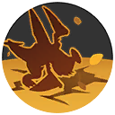
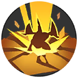
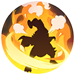

Garchomp's Viability Stats:
| Offense | Endurance | Mobility | Scoring | Support |
|---|---|---|---|---|
| 7 | 7 | 5 | 5 | 1 |
Garchomp's Stats at Level 15:
| HP | Attack | Defense | Sp. Atk | Sp. Def | Speed |
|---|---|---|---|---|---|
| 7750 | 496 | 420 | 114 | 318 | 3650 |
Garchomp's Abilities:
| Level Unlocked | Ability Name | Ability Description | Cooldown | Damage at Level 15 | |
|---|---|---|---|---|---|
| 1 | Sand Attack | Hurls sand, narrowing the field of vision of enemies and decreases their movement speed for a short time. Also increases movement speed and basic attack speed. | 6s | 0 | |
| 1 | Bulldoze | Stomp down on the ground, dealing damage to enemies in the area of effect. | 5s | 1141 | |
|  | 6 | Dig | Burrow underground and move quickly in the designated direction, jumping out when coming in contact with an enemy or when traveling the maximum distance. This jump deals damage to enemies in the area of effect and throws them. | 8s | 865 |
 |
6 | Dragon Rush | Back up to create distance before diving to attack in the designated direction, shoving enemies. The user can use Dragon Claw while creating distance at the start of this move to create a combo attack. | 6s | 549 |
|  | 8 | Earthquake | Jump high into the air and crash forcefully to the ground, dealing damage to enemies in the area of effect. | 7s | 1777 |
 |
8 | Dragon Claw | Attack twice in front of itself using its claws. The first attack deals damage to enemies and throws them. The second attack deals increased damage. After the move ends, basic attack speed is increased for a short time. | 5s | 1581 |
|  | 10 | Livid Outrage | Has the user unleash a powerful chain attack while dashing forward. The final attack throws enemies but also leaves the user unable to act for a short time. | Variable | 2970 |